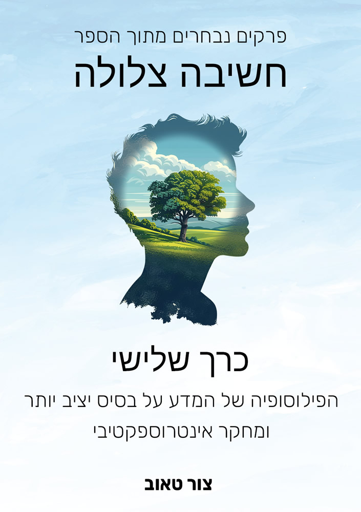
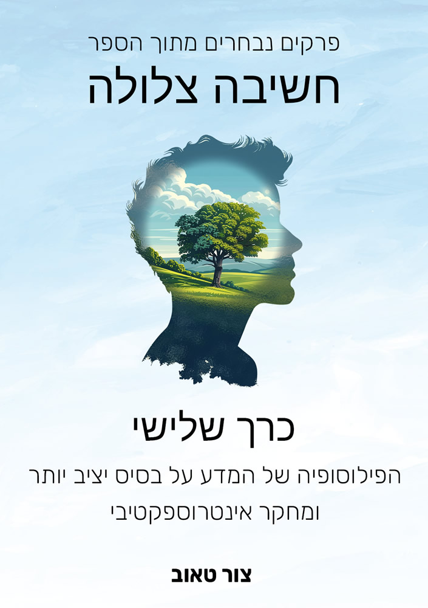
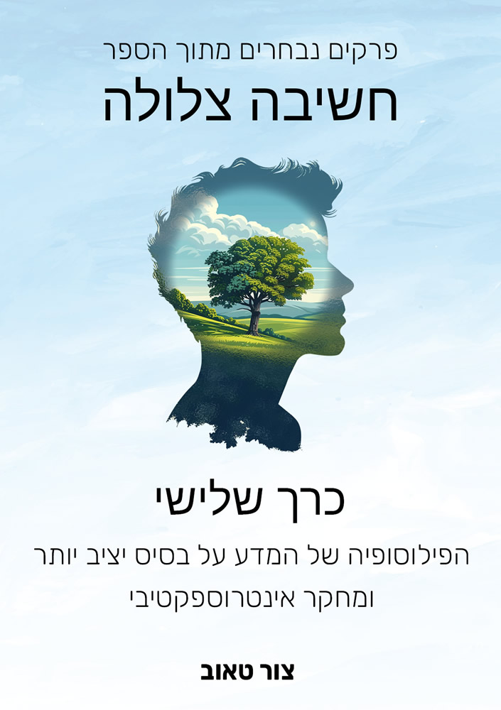
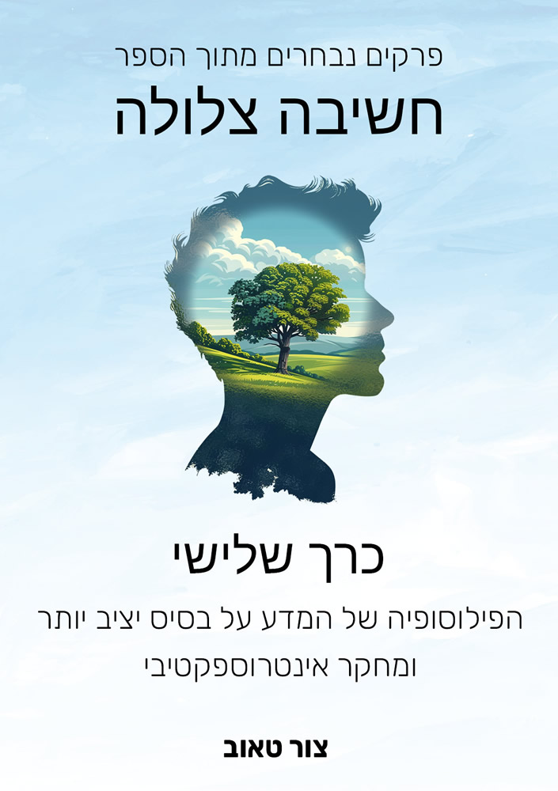
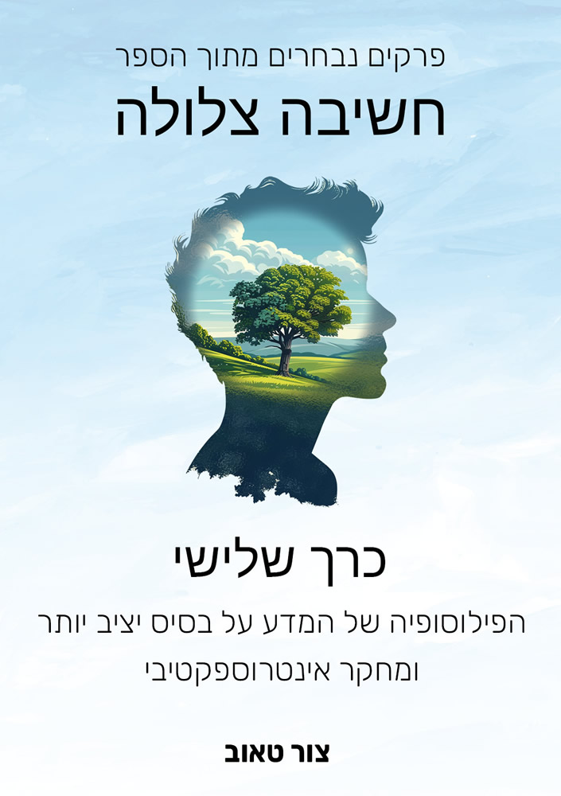

פרקים נבחרים מתוך הספר חשיבה צלולה

כרך ראשון - בסיס הידע: כיצד אנו יודעים את מה שאנו יודעים?
הכנה
על הספר
מדוע הפילוסופיה אינה מגיעה לתשובות מוחלטות?
בלבול השפות
מה זה: מה זה?
מגבלות ההיגיון
הנגשת האבסטרקציה
בסיס הידע
נקודת המוצא – התודעה
מהי התודעה?
הנפש – תחושות, רגשות ומחשבות
תשומת הלב
מהי אמת?
מהי ידיעה?
מהי אמונה?
מהי הבנה?
מהו מושג?
מהי הפשטה?
מבנה הידע – נתונים ופרשנות
מבנה הידע – נתונים ופרשנות (העמקה)
תפיסת הנבדלות
מהו מידע?
מהו תיאור?
כרך שני - בסיס חדש לתורת המוסר
הכנה
על הספר
מדוע הפילוסופיה אינה מגיעה לתשובות מוחלטות?
בלבול השפות
מה זה: מה זה?
מגבלות ההיגיון
הנגשת האבסטרקציה
הנפש – תחושות, רגשות ומחשבות
מבנה הידע – נתונים ופרשנות
ריבוי ה״אני״
בסיס חדש לתורת המוסר
הפרדה בין דחף פנימי לפעולה לחיצונית
מוסר – יש דבר כזה?
טבעם של הטוב והרע
המטרה הסופית של החיים
צרכים וערכים
מהו דטרמיניזם?
מהו רצון?
האם הבחירות שאנו עושים הן רצוניות או אוטומטיות?
רצון חופשי – האם יש דבר כזה?
מהי אחריות?
ציפייה, האשמה ואחריות אישית
תפיסות המגבילות את האפשרות
כל מה שאני עושה, אני עושה עבור עצמי
מהי אלימות?
מהו שיפוט?
מטרת הענישה
כיצד לעשות טוב? בסיס יציב ליצירת חברה הרמונית
פרקי העמקה
מהי סיבתיות?
המטרה הסופית של החיים (העמקה)
מהי אלימות? (העמקה)
מהו שיפוט? (העמקה)
כרך שלישי - הפילוסופיה של המדע על בסיס יציב יותר + מחקר אינטרוספקטיבי
הכנה
על הספר
מדוע הפילוסופיה אינה מגיעה לתשובות מוחלטות?
בלבול השפות
מה זה: מה זה?
מגבלות ההיגיון
הנגשת האבסטרקציה
בסיס הידע
נקודת המוצא – התודעה
מהי התודעה?
הנפש – תחושות, רגשות ומחשבות
מהי אמת?
מהי ידיעה?
מהי אמונה?
מהי הבנה?
מהו מושג?
מבנה הידע – נתונים ופרשנות
מהי סיבתיות?
מהו דטרמיניזם?
מהו מידע?
מהו תיאור?
הפילוסופיה של המדע על בסיס יציב יותר
מהו מדע?
מהי אמפיריות?
טבעה של מדידה
מהי אובייקטיביות?
בעיית האינדוקציה
בעיית התיחום של המדע
מהי הוכחה?
תופעה מתהווה
תכונותיו של מחפש אמת
נקודות השיפור של המדע
מחקר פנימי: מדע חדש־ישן
רקע עליי
אינטרוספקציה ככלי מחקר מדעי
מחקר אינטרוספקטיבי
המכניקה של הנפש
פרקי העמקה
לוגיקה כתוצר של הניסיון
מבנה הידע – נתונים ופרשנות (העמקה)
נספח: דוגמה לניסוי אינטרוספקטיבי
כרך רביעי - טבעה של המתמטיקה
הכנה
על הספר
מדוע הפילוסופיה אינה מגיעה לתשובות מוחלטות?
בלבול השפות
מה זה: מה זה?
מגבלות ההיגיון
הנגשת האבסטרקציה
הבסיס הנפשי עליו נשענת המתמטיקה
מהי אמת?
תפיסת הנבדלות
מהי הפשטה?
טבעה של המתמטיקה
טבעה של המתמטיקה
טבעה של המתמטיקה (העמקה)
מתמטיקה וסיבתיות בפיזיקה
לוגיקה כתוצר של הניסיון
פרקי העשרה הנוגעים לפילוסופיה של המתמטיקה
מהו מידע?
מהו תיאור?
פרדוקסים של התייחסות עצמית
מהי הוכחה?
כרך חמישי - מבחר רעיונות פילוסופיים מנקודת מבט חדשה
הכנה
על הספר
מדוע הפילוסופיה אינה מגיעה לתשובות מוחלטות?
בלבול השפות
מה זה: מה זה?
מגבלות ההיגיון
הנגשת האבסטרקציה
שאלות פילוסופיות נפוצות מנקודת מבט חדשה
מהי זהות?
מי אני?
טבעו של הזמן
טבעה של המתמטיקה
מהו מידע?
מהו תיאור?
פתרונות לפרדוקסים פילוסופיים
ספינת תזאוס
הפרדוקס של ניוקום
פרדוקסים של התייחסות עצמית
בעיות פילוסופיות לא פתורות
הבעיה הקשה של התודעה
האם קיים ידע מובנה? (אפריורי)
הסיבה הראשונית
פרקי העמקה
מי אני? (העמקה)
טבעו של הזמן (העמקה)
טבעו של הזמן (מנקודת מבטה של הפיזיקה)
טבעה של המתמטיקה (העמקה)
האם קיים ידע מובנה? (העמקה)
 


